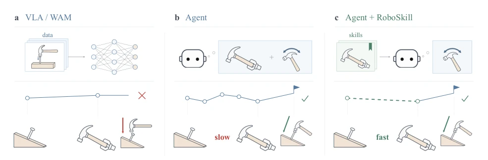
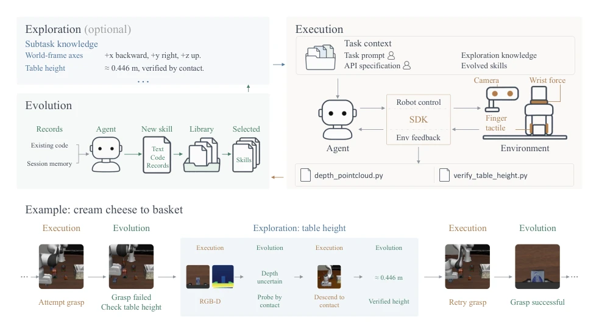
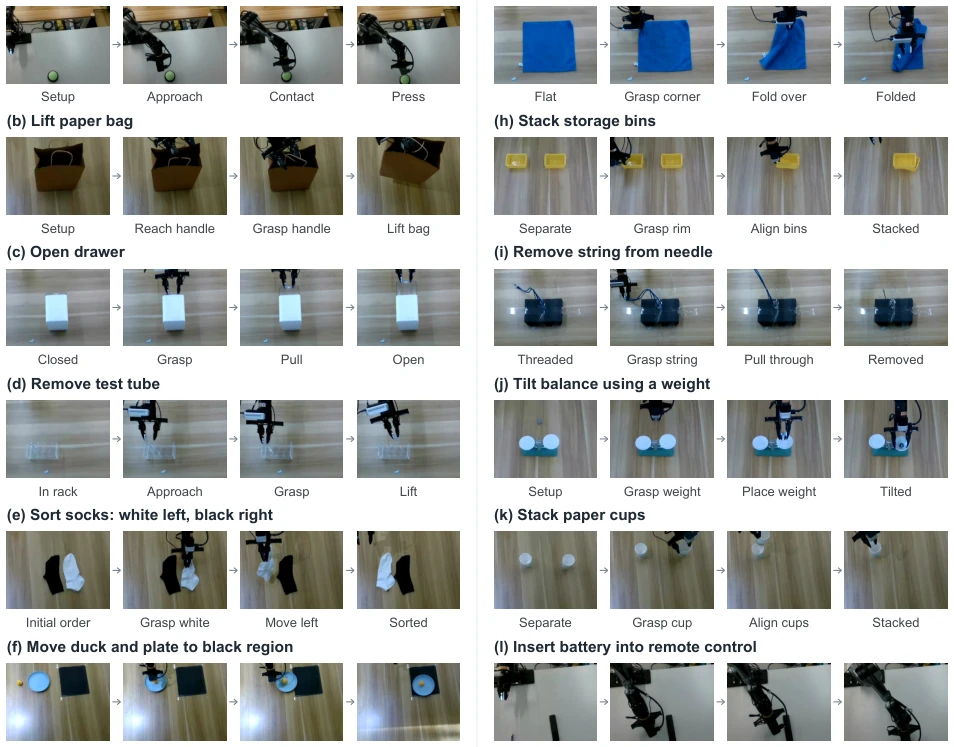
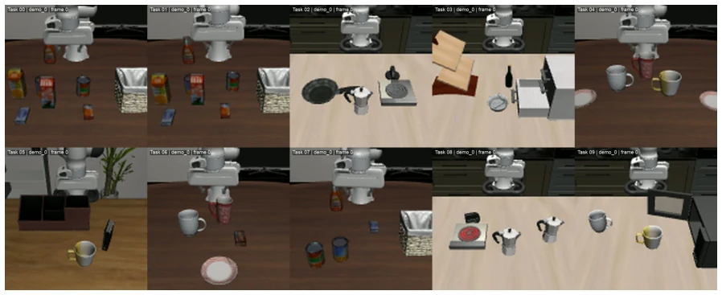

This RoboSkill paper attempts to equip embodied intelligence with a "memory system" to address the waste issue of general Agents "forgetting" during every task execution. Although VLA and WAM are very popular [1, 2, 4], they suffer from poor generalization, and Agent zero-shot reasoning is prohibitively expensive. The authors devised an "Explore-Execute-Evolve" loop to store experience as skill packages for reuse. The highlight lies in introducing tactile feedback and executable code, which are more practical than pure text descriptions. The experimental data is indeed impressive, with the LIBERO-10 first-attempt success rate skyrocketing, and it also works on real hardware. However, there are also significant drawbacks: the skill library depends on initial successful exploration; if the first attempt fails, subsequent efforts are all in vain. Cross-model transfer effects are unstable, with some models actually becoming slower. This resembles more of an engineering "cache optimization," falling short of true lifelong learning, as skill updates still rely on specific triggers rather than fully automatic evolution.
Existing VLA/WAM models [1, 2, 4], while supporting fast execution, face limited generalization when facing unseen tasks and rely on training data distributions. General multimodal Agents [6, 15, 17, 30], although possessing zero-shot capabilities, require re-perception and trial-and-error for each execution, incurring high costs and lacking long-term memory. Software Agents already have experience with skill reuse [22, 25, 27, 32], but embodied interaction involves partial observability, scene changes, and physical uncertainty, making direct reuse of fixed plans infeasible and requiring verification of physical outcomes. RoboSkill aims to connect skill acquisition and reuse through a loop to reduce repetitive labor. The core challenge lies in how to adapt to new scenes and verify physical results, rather than simple playback, requiring the resolution of perception ambiguity caused by the lack of tactile feedback.

Figure 1 RoboSkill accelerates agent execution through skill reuse. In this tilted-nail example, a VLA/WAM follows the vertical hammering strategy learned from its training data. An embodied agent reasons about both grasping and striking, while RoboSkill accelerates execution by reusing the grasping skill and reasoning only about the strike direction.
The framework is built around the Explore-Execute-Evolve loop. First, the Agent receives task instructions and existing skills; if information is missing, it enters an exploration subtask, utilizing RGB-D and tactile feedback (pressure/torque) to obtain physical evidence, such as contact confirmation of height, to resolve visual uncertainty. Second, executable code is generated based on exploration knowledge and the skill library, calling the SDK to operate the robot, recording interaction trajectories and code to support reuse. Finally, upon task completion, the system enters the evolution stage, organizing records into skill packages that include text strategies, executable code, and failure case metadata. Skill packages are available for selection by subsequent tasks, enabling cross-task reuse. Key innovations include: 1. Tactile feedback reduces physical interaction uncertainty; 2. Executable code reduces reasoning overhead while retaining specific operational details; 3. The skill library undergoes dynamic updates, supporting cross-agent migration, with metadata assisting selection.

Figure 2 The RoboSkill framework. The agent explores to acquire missing information, executes with visual and tactile feedback, and produce skills to guide the next cycle. The example illustrates a nested exploration loop that verifies table height through contact before resuming grasping.
Evaluated on LIBERO-10 simulation and a real Piper robotic arm. The baseline is without skill saving. Metrics include first-attempt success rate, average time, etc. Simulation results show that RoboSkill increased the first-attempt success rate of GPT-5.6 Sol by 25% and reduced the average time of Opus 5 by 72.4%, significantly shortening the time cost. On real hardware, the success rate increased by 8.3%, effectively reducing the number of attempts. Ablation experiments indicate that both executable code and tactile input significantly improve efficiency, with tactile input being particularly crucial in real-world tasks. Cross-task and cross-agent (e.g., Astra to Sol) skill transfer is effective, but the effect varies by model, with slight fluctuations in first-attempt success rates for some models, indicating that the skill selection strategy still requires optimization.

Figure 5 Execution stages of the 12 reported real-robot tasks. Panels (a)–(f) show easy tasks and panels (g)–(l) show hard tasks. Task objectives are listed in table 12.
其他图片Other Figures

Figure 4 Example initial states of the ten LIBERO-10 tasks. Task IDs are used consistently in the cross-task pairings and skill selection tables. Each image illustrates one initial state.